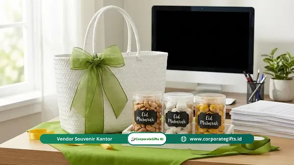

Corporate Gifts ID - Etika mengirimkan hampers lebaran kantor mencakup empat aturan utama: hindari gratifikasi kepada aparatur negara, bagikan secara merata ke seluruh karyawan agar bebas pajak natura, pastikan produk berlabel halal dan memiliki izin edar, serta pilih barang netral yang bukan kebutuhan pribadi. Kirimkan bingkisan maksimal dua pekan sebelum Idul Fitri agar diterima tepat waktu dan tidak terjebak penumpukan logistik kurir.
Momen tahunan Idul Fitri merupakan waktu yang sangat dinantikan oleh korporasi untuk mempererat tali silaturahmi bisnis dan mengapresiasi loyalitas tim. Namun, niat baik tersebut bisa berbalik menjadi bumerang jika melanggar batasan profesional dan hukum yang berlaku. Banyak praktisi HR dan purchasing yang belum menyadari bahwa pengiriman parsel atau hampers dapat berbenturan dengan delik gratifikasi atau memicu kewajiban pajak natura PPh Pasal 21.
Poin Kunci Etika Hampers Lebaran Kantor:
- Bebas Gratifikasi: Dilarang keras mengirimkan hampers kepada pejabat publik, ASN, atau pegawai BUMN pengambil keputusan lelang.
- Kepatuhan Pajak Natura: Pembagian hampers kepada karyawan wajib merata tanpa membedakan kasta jabatan agar dikecualikan dari objek pajak penghasilan.
- Legalitas Konsumsi: Seluruh produk makanan dan minuman wajib memiliki sertifikasi Halal MUI/BPJPH dan izin edar resmi BPOM/P-IRT.
- Netralitas & Fungsionalitas: Utamakan produk perkantoran, perlengkapan makan elegan, atau gourmet premium daripada barang mewah berunsur personal.
Mengapa Etika Pemberian Hampers Lebaran Penting?
Budaya berkirim hampers bukan sekadar ajang unjuk kemampuan finansial divisi atau perusahaan pengirim. Memahami etika hampers lebaran kantor adalah wujud apresiasi tulus atas kerja keras kolega maupun relasi bisnis sepanjang tahun. Ada tiga pilar utama yang mendasari pentingnya etika ini:
- Menjaga Integritas Profesional: Pemberian di ranah kerja selalu memunculkan persepsi tertentu dari pihak luar. Perusahaan harus memastikan tidak ada tendensi tersembunyi untuk memuluskan kepentingan tender atau proyek di masa mendatang.
- Mencegah Konflik Kepentingan: Bingkisan yang bernilai terlalu fantastis dapat membuat penerima merasa memiliki utang budi psikologis, sebuah situasi yang berisiko merusak objektivitas mereka saat mengambil keputusan bisnis strategis.
- Menghargai Kebijakan Internal Perusahaan: Setiap instansi memiliki pedoman penerimaan hadiah (no gift policy) yang berbeda. Mengabaikannya sama dengan menjerumuskan kolega Anda ke dalam pelanggaran disiplin kerja di instansinya.
Aturan Utama Memberi Hampers ke Klien Publik dan Swasta
Tidak semua klien bebas menerima bingkisan hari raya tanpa konsekuensi hukum. Terdapat batasan regulasi yang tegas sebelum menentukan daftar penerima paket hampers perusahaan Anda:
- Waspada Gratifikasi untuk Pejabat Publik: Komisi Pemberantasan Korupsi (KPK) secara tegas melarang pemberian parsel atau hampers kepada aparatur sipil negara (ASN), anggota TNI/Polri, serta pejabat BUMN/BUMD karena secara otomatis terkategori sebagai gratifikasi ilegal.
- Patuhi Kebijakan Hadiah Perusahaan Swasta: Klien dari korporasi multinasional dan perbankan umumnya menerapkan sistem kepatuhan (compliance) ketat yang membatasi nominal hadiah maksimal atau bahkan menolak seluruh jenis bingkisan fisik.
- Pilih Barang yang Bersifat Netral: Hindari barang personal seperti parfum, perhiasan, atau pakaian khusus. Alihkan pada produk fungsional seperti set cangkir kopi keramik, tumbler vacuum stainless, atau kue kering kurasi premium.

Pemilihan paket hampers lebaran kantor yang netral, fungsional, dan berlabel halal.
Bagaimana Etika Memberi Hampers untuk Atasan dan Bawahan?
Dinamika hierarki internal kantor membuat urusan bingkisan menjadi topik sensitif, terutama demi menjaga suasana kerja yang kondusif tanpa prasangka favoritisme:
- Patungan Tim untuk Hadiah Atasan: Jika ingin mengapresiasi pimpinan divisi, kumpulkan dana kolektif dari seluruh anggota tim dan berikan bingkisan atas nama bersama divisi, bukan secara perorangan.
- Pembagian Adil untuk Seluruh Karyawan: Manajemen wajib mendistribusikan hampers bernilai setara dari tingkat staf lapangan hingga jajaran manajerial guna mencegah kesenjangan sosial.
- Sesuaikan Isi dengan Kebutuhan Mayoritas: Lakukan survei singkat kebutuhan sebelum tim purchasing melakukan pengadaan massal lewat formulir minta penawaran resmi.
Tabel Komparasi Etika dan Batasan Hukum Hampers Kantor
Untuk memudahkan pemetaan pengadaan bingkisan hari raya, berikut matriks perbandingan batasan etika hampers antar sektor:
| Aspek Etika & Regulasi | Sektor Publik (BUMN/PNS) | Sektor Swasta / Korporasi | Solusi Aman CorporateGifts.ID |
|---|---|---|---|
| Potensi Delik Gratifikasi | Sangat Dilarang (Wajib lapor KPK) | Tergantung SOP Kepatuhan internal perusahaan | Pengalihan ke kartu ucapan digital atau souvenir event resmi |
| Status Pajak Natura (PPh 21) | Mengikuti anggaran resmi APBN/APBD | Bebas pajak jika dibagikan merata ke seluruh staf | Paket hampers standar seragam berfaktur pajak lengkap |
| Kategori Isi Produk | Tidak diperkenankan menerima bingkisan fisik | Gourmet berlabel halal & merchandise fungsional | Kue kering sertifikasi Halal BPJPH + kemasan bambu/bespoke |
| Batas Waktu Pengiriman | - | Maksimal H-14 sebelum cuti bersama Idul Fitri | Jadwal pengiriman terjadwal dan ekspedisi korporat aman |
Pajak Natura Hampers Lebaran yang Wajib Diketahui
Berdasarkan regulasi perpajakan di Indonesia (PMK No. 66/2023), pemberian fasilitas dan bingkisan hari raya keagamaan kepada karyawan memiliki ketentuan khusus terkait Pajak Penghasilan (PPh Pasal 21) atas kenikmatan atau natura:
- Syarat Bebas Pajak (Merata untuk Semua Karyawan): Bingkisan hari raya Idul Fitri dikecualikan dari objek PPh 21 selama diberikan kepada seluruh pegawai tanpa memandang jabatan atau penilaian kinerja individual.
- Risiko Pajak Jika Diberikan Selektif: Hampers mewah dengan nilai fantastis yang hanya diberikan kepada jajaran manajer tertentu dapat dianggap sebagai tambahan penghasilan natura yang wajib dipotong pajak penghasilan.
- Faktur Pajak dan Kerapian Administrasi: Pastikan pengadaan hampers bermitra dengan vendor resmi berbadan hukum yang mampu menerbitkan faktur pajak lengkap demi validitas laporan keuangan perusahaan.
Hal yang Wajib Diperiksa Sebelum Mengirim Hampers Lebaran Kantor
Kelalaian kecil pada detail teknis hampers dapat mencoreng reputasi profesional perusahaan Anda. Pastikan tim Anda melakukan pemeriksaan menyeluruh pada poin-poin berikut:
- Legalitas Halal dan Izin Edar: Syarat mutlak untuk semua produk konsumsi. Pastikan logo Halal resmi dan nomor registrasi BPOM atau P-IRT tertera jelas pada kemasan.
- Verifikasi Tanggal Kedaluwarsa (Expired Date): Pastikan masa simpan makanan kering atau minuman minimal 6 bulan ke depan saat bingkisan diterima.
- Ketepatan Waktu Pengiriman: Jadwalkan pengiriman pada minggu ke-2 atau ke-3 bulan Ramadhan agar terhindar dari keterlambatan akibat lonjakan volume ekspedisi logistik.
- Kemasan Elegan dan Ramah Lingkungan: Pilih kemasan ramah lingkungan seperti keranjang bambu estetik, hardbox premium daur ulang, atau tas kain yang dapat digunakan kembali.
- Kartu Ucapan Personal (Bukan Template Kosong): Tuliskan nama penerima dan nama perusahaan dengan benar untuk menegaskan ketulusan hubungan kemitraan.
Cara Profesional Menyikapi Penolakan Hampers dari Klien
Jika klien rekanan Anda menolak menerima hampers karena terikat kebijakan kepatuhan internal, jangan merasa tersinggung. Sikapi situasi tersebut secara profesional melalui langkah-langkah berikut:
- Hormati Kebijakan Tanpa Memaksa: Jangan membujuk atau mencari jalan pintas untuk tetap menyerahkan bingkisan tersebut. Menghormati aturan mereka justru membangun respek jangka panjang.
- Kirim Surat atau Pesan Apresiasi Santun: Sampaikan bahwa Anda sangat menghargai komitmen integritas mereka dan tegaskan bahwa silaturahmi bisnis tetap terjalin erat.
- Alihkan untuk Kegiatan Amal (CSR): Paket hampers yang dikembalikan dapat dialokasikan ke yayasan sosial atau panti asuhan sebagai bentuk kepedulian sosial perusahaan.
Kesimpulan dan Konsultasi Pengadaan
Mengirimkan hampers lebaran kantor adalah sarana efektif merawat relasi bisnis dan memperkuat loyalitas karyawan, asalkan dijalankan dengan mematuhi etika korporat, aturan anti-gratifikasi, dan kepatuhan pajak natura. Dengan perencanaan matang dan pemilihan produk yang netral, aman, serta berkualitas, bingkisan Idul Fitri perusahaan Anda akan memberikan dampak positif yang berkesan tanpa risiko hukum.
Konsultasikan kebutuhan hampers lebaran kantor Anda bersama tim spesialis CorporateGifts.ID. Dapatkan penawaran harga resmi B2B dan visual mockup gratis melalui formulir permintaan penawaran harga hari ini juga.